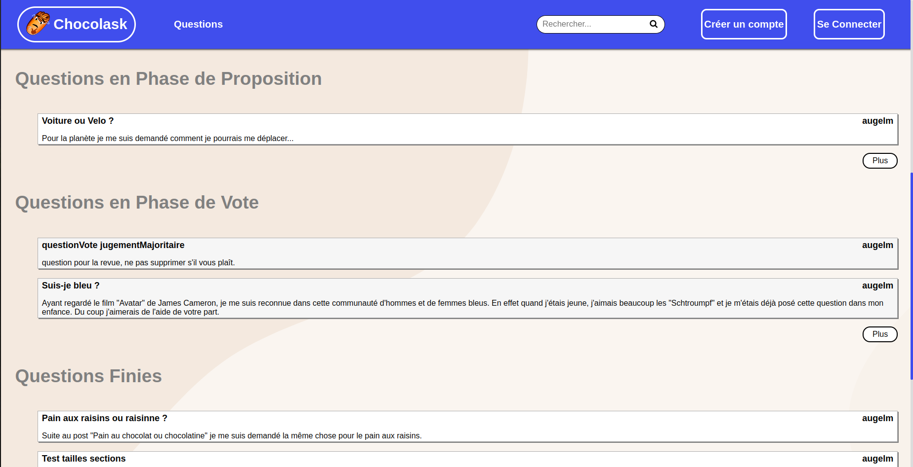
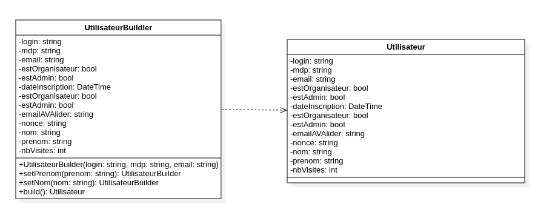
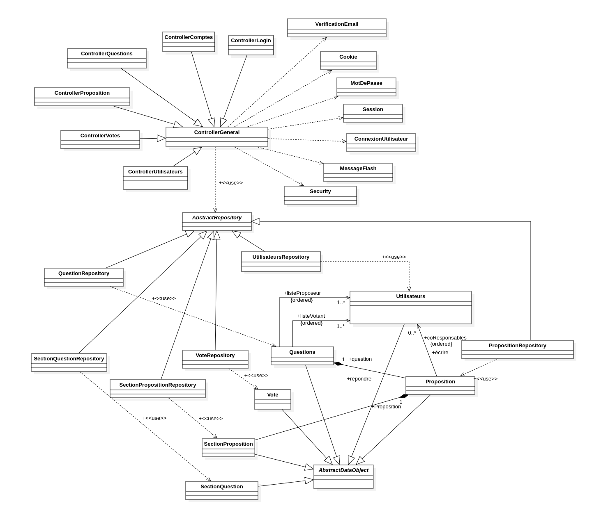

Copyright 2019 Reflux Design
Chocolask
 Chocolask est un site de démocratie participative réalisé dans le cadre de la SAE du 3e semestre du BUT. Ce projet a été réalisé dans une équipe de 4 et nous devions appliquer la méthode agile SCRUM et utiliser le langage PHP pour implémenter les différentes fonctionnalités attendues.Carrousel
Vous pourrez voir sur ce carrousel un résumé de notre site avec les diverses pages, fonctionnalités et technologies utilisés.

Conception
Je me suis occupé le long du projet de maintenir le diagramme de classe afin d’avoir une meilleure idée des relations entre les différentes classes. Cela m’a permit de maîtriser le langage UML à travers l’outil StarUML
